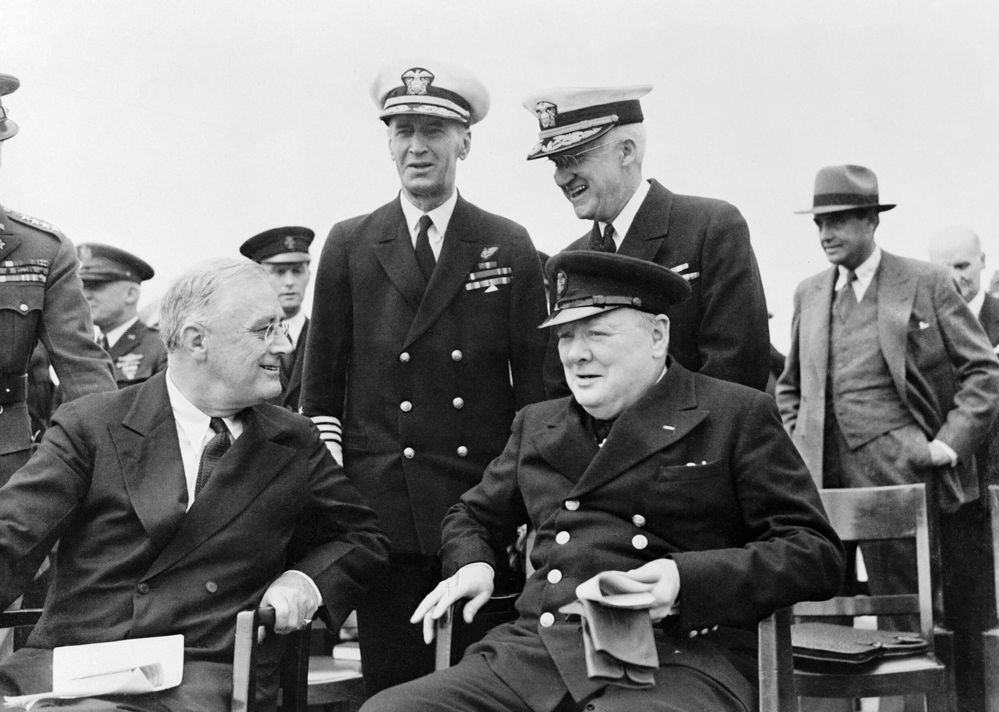

Directions: Fill in the chart as we study each step of the road. Keep this page in your notebook. You will use it again on the review day before the unit test.

| Step | What happened | Toward war, holding back, or both | The evidence |
|---|---|---|---|
| The Neutrality Acts, 1935 to 1937 | |||
| The Quarantine speech, 1937 | |||
| Cash-and-carry, 1939 | |||
| Destroyers for bases and the draft, 1940 | |||
| Lend-Lease, 1941 | |||
| The Charter and the shots at sea, 1941 |
The road in one sentence. Finish this sentence in your own words, using at least two rows of the chart as evidence. Between 1935 and 1941 the United States moved toward war without declaring it by...
| Step | What happened | Toward war, holding back, or both | The evidence |
|---|---|---|---|
| The Neutrality Acts, 1935 to 1937 | Congress barred arms exports, then loans and travel, to every nation at war, attacker and attacked alike. | Holding back | The 1935 act made it unlawful to export arms, ammunition, or implements of war to any belligerent port, or to a neutral port for transshipment to a belligerent. |
| The Quarantine speech, 1937 | Roosevelt proposed that peace loving nations quarantine aggressor nations, then dropped the idea under attack. | Both | War is a contagion, he argued, yet he named no country and proposed no measure, and the speech still failed in public. |
| Cash-and-carry, 1939 | Congress replaced the arms embargo with sales to nations at war that paid cash and carried goods in their own ships. | Both, toward war in effect | Britain ruled the Atlantic surface, so British ships could buy and carry while German ships could not reach American ports. |
| Destroyers for bases and the draft, 1940 | After France fell, Roosevelt sent Britain fifty aging destroyers for leases on British bases, and Congress passed the first peacetime draft. | Toward war | American warships entered a belligerent navy, and the United States began raising a mass army while still at peace. |
| Lend-Lease, 1941 | Congress let the president lend or lease arms and supplies to any country whose defense he judged vital to American defense. | Toward war | Section 3 opens with the words notwithstanding the provisions of any other law, setting the Neutrality Acts aside for any country the president named. |
| The Charter and the shots at sea, 1941 | Roosevelt and Churchill issued the Atlantic Charter, and American destroyers escorting convoys fought German submarines. The Reuben James was sunk with 115 of her crew. | Toward war | A neutral president signed common aims with a nation at war, and American sailors were killed at sea months before any declaration of war. |
The road in one sentence. Strong answers name the mechanism, not only the direction. The country moved by changing its laws and its practice one step at a time, from barring arms to all belligerents, to selling for cash, to lending arms by presidential judgment, to escorting convoys and fighting at sea, while the legal state of neutrality stayed in place until December 1941.